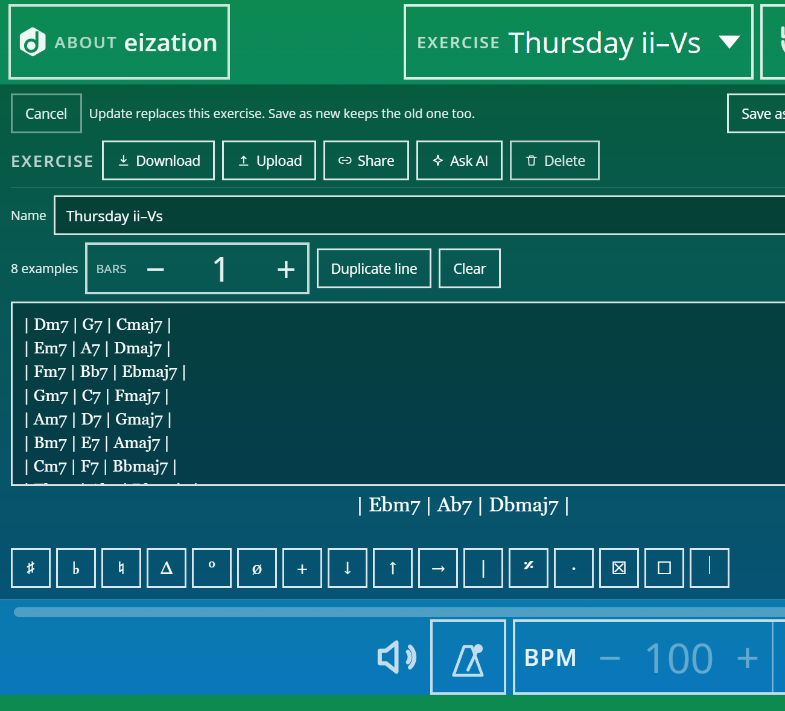
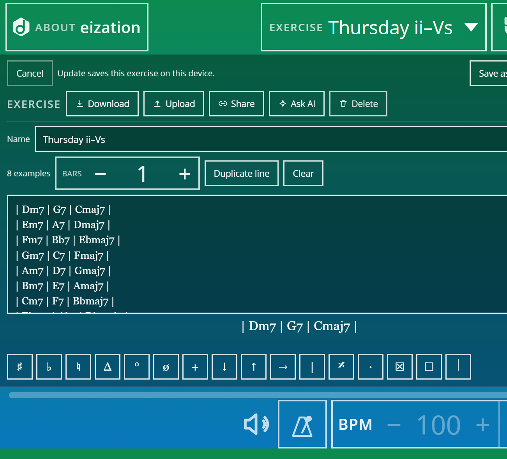
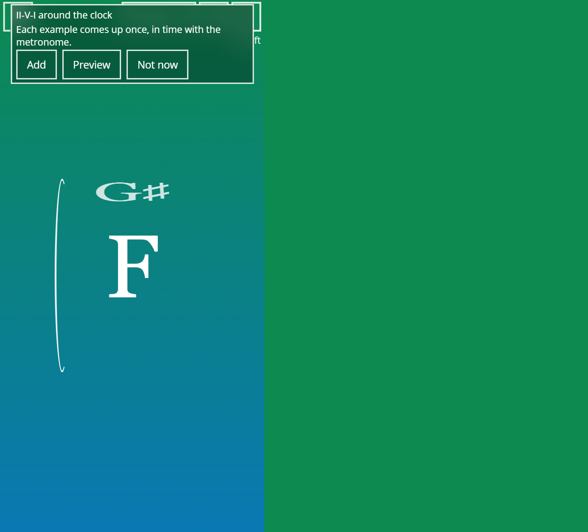
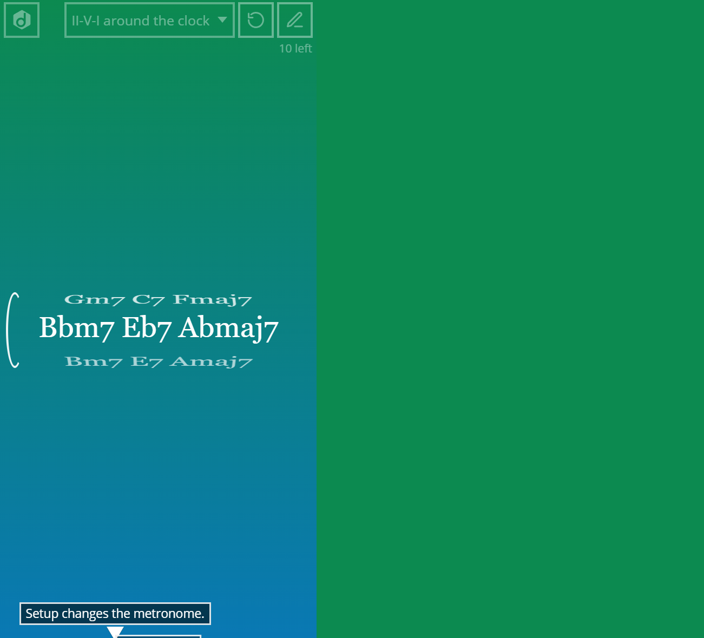

Homework That Survives Thursday
Build an exercise on the teacher’s tablet. Share the link. The student opens it on the phone and practices one example at a time.
Tuesday’s lesson ends with a clear agreement. You write it in the notebook. You text a photo of the page. You send a PDF. You leave a voice note that starts with “so basically…” and ends somewhere near the parking lot.
Thursday arrives. The student practiced something. It was not the something. The photo was unread. The PDF opened into a scroll of intentions. The voice note required headphones and optimism.
If the homework is a paragraph of hopes, Thursday will negotiate. If the homework is an exercise, Thursday has less room to argue.
Build it in Edit—short on purpose
Open eization on the tablet you already use in the lesson. Edit. Name the exercise something a student can find later (“Thursday ii–Vs,” not “stuff”). Type one example per line. Eight to twelve lines beat fifty lines of optimism. Set Bars to the length of each example.
Lines can come from a book they already own—type only what you circled this week. See Books you own. Or start from a stock exercise and Save as new. Or open something ready-made from more exercises and trim it.

When the list is honest, Save as new (or Update if you meant to replace). The exercise now lives on that device. The next step is getting it onto theirs.
Share copies a link—not a lecture
Still in Edit, tap Share. eization copies a link to that exercise. Paste it into whatever channel you already use: message, email, studio chat. Put the starting BPM in the same message. Do not rely on memory to carry tempo across the hallway.

The link is the homework. They do not need an account. They do not need to recreate your handwriting from a photo of a napkin.
Student opens the link: Add or Preview
On their phone, the link lands on the practice screen with a clear question: Add, Preview, or Not now. Add keeps the exercise on that device. Preview lets them look in Edit without committing. Exact matches open quietly—no drama if they already have it.

That is the whole handoff. No login wall. No “download the app then create an account then find the folder.”
Then practice—one example, with the click
Phone on the stand. Play keeps time on the example showing. Next brings the next one. Each example in the exercise comes up once; then the order changes. Favorites still get played. They stop eating the whole session.

Guardrails that keep Tuesday honest
- Keep the list short. Coverage dies when the exercise looks like a novel.
- Write the starting BPM next to the link.
- Match Bars to the example length.
- Share does not grade the take. Your ear still does that in the next lesson.
- Share is not a band-in-a-box. Context comes later—after the examples work alone under the click.
For the pedagogy behind queues, see Stop Teaching the Line. Start Teaching the Queue. For ready lesson recipes, see 5 Lesson Plans You Can Run Tomorrow. For how practice works in plain language, see Practice one example at a time.